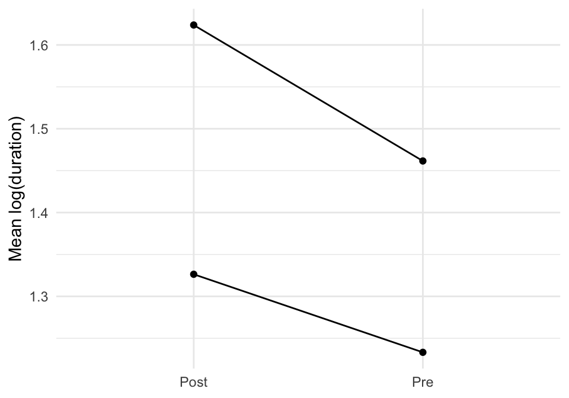
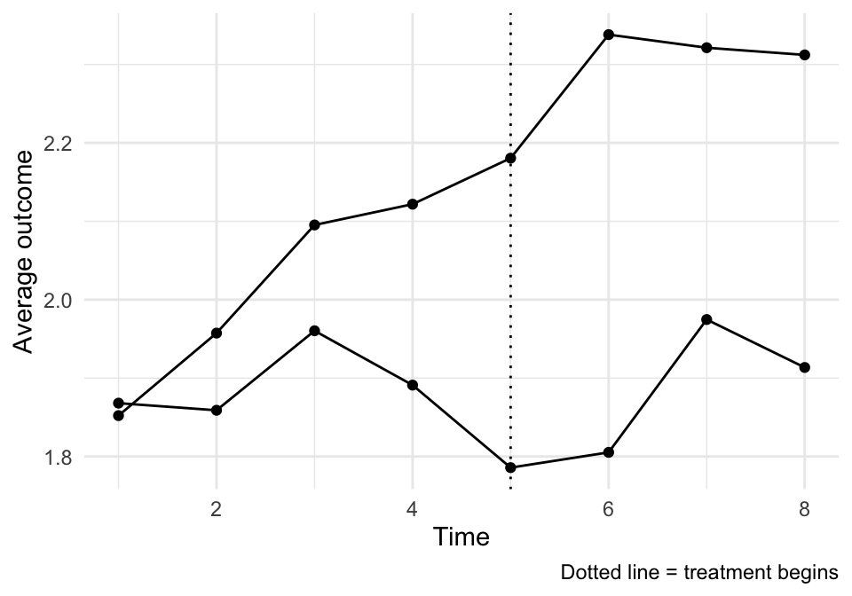
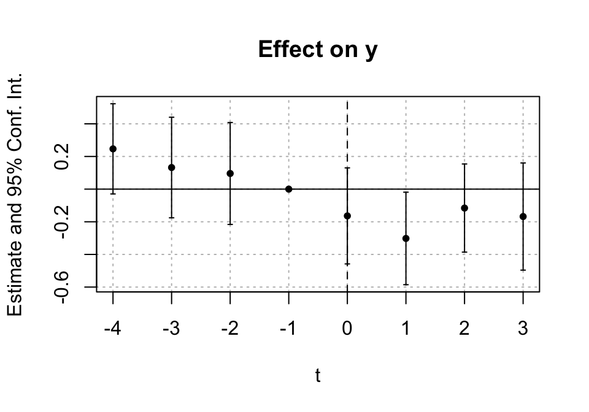

23 Lecture 10: Difference-in-Difference
Slides
- 10 Difference-in-Difference (link)
23.1 In-class example
Below is the example code from class lectures.
## Experiments and Causal Inference
## Week 11: Difference in difference II
library(tidyverse)
library(modelsummary)
library(fixest)
library(readr)
## Vignette 11.1: Difference in Difference Example:
# Data from the interwebs:
od_data ="https://raw.githubusercontent.com/NickCH-K/causalbook/main/DifferenceinDifferences/organ_donation.csv"
od <- read_csv(url(od_data))
# Treatment
od <- od %>%
mutate(Treatment = State == 'California' &
Quarter %in% c('Q32011','Q42011','Q12012'),
After_Treatment = Quarter %in% c('Q32011','Q42011','Q12012'),
California = State == 'California')
# Feols = Fixed Effects OLS... Everything afther the |
# are the variable for which I want to do fixed effects:
# feols also allows us to cluster the errors around the first fixed effect
clfe <- feols(Rate ~ Treatment | State + Quarter,
data = od)
# Alternative II:
clfe_2 <-lm(Rate ~ Treatment + factor(State) + factor (Quarter),
data = od)
# Alternative III:
clfe_3 <-lm(Rate ~ After_Treatment + California +
After_Treatment * California,
data = od)
msummary(list(clfe,clfe_2,clfe_3), stars = c('*' = .1, '**' = .05, '***' = .01),
vcov = list(~State,"robust","robust"),
coef_omit = "factor", notes = "Fixed effects coefficient in Model 2 are omitted.",
gof_map = c('nobs',"adj.r.squared",'FE: State','FE: Quarter','vcov.type'))23.2 Difference-in-Differences (DiD)
Difference-in-differences is a way to estimate a treatment effect when we have:
- a treated group and a comparison group, and
- outcomes observed before and after treatment begins.
The core intuition is simple:
Use the comparison group to subtract off whatever would have happened over time anyway.
We’ll do this twice: 1. A clean two-period DiD with real data (injury.csv). 2. A short multi-period example (so we can talk about event study plots and parallel trends checks).
23.2.1 The math spine (two-by-two DiD)
Let \(T\in\{0,1\}\) indicate treatment group and \(Post\in\{0,1\}\) indicate the post period.
The DiD estimand is:
\[ \widehat{\tau}_{DID}=(\bar Y_{T=1,Post=1}-\bar Y_{T=1,Post=0}) - (\bar Y_{T=0,Post=1}-\bar Y_{T=0,Post=0}) \]
That is: change in treated (i.e., the difference before and after in the treatment group) minus (i.e., the difference) change in control (i.e. the difference before and after in the control group). Thus, a difference-in-difference.
23.2.2 DiD as a regression interaction
The “canonical” DiD regression is:
\[ Y = \beta_0 + \beta_1 T + \beta_2 Post + \beta_3(T\cdot Post) + \varepsilon \]
Interpretation cheat-sheet (these are fitted cell means):
- Control, pre: \(\beta_0\)
- Treated, pre: \(\beta_0+\beta_1\)
- Control, post: \(\beta_0+\beta_2\)
- Treated, post: \(\beta_0+\beta_1+\beta_2+\beta_3\)
So \(\beta_3\) is the DiD estimate.
Note: the following two examples were borrowed from Andrew Heiss’ course on program evaluation.
23.3 Vignette A: Workers’ compensation injury durations (two-period DiD)
We’ll use injury.csv. In this dataset:
-
kyindicates the treated group (Kentucky = 1; Michigan = 0) -
afchngeindicates the post period (after the policy change = 1) -
lduratis log duration (a nice, well-behaved outcome)
library(tidyverse)
library(modelsummary)
library(marginaleffects)
library(sjPlot)
injury <- read_csv("Sample_data/injury.csv", show_col_types = FALSE)
injury <- injury %>%
mutate(
ky = as.integer(ky),
mi = as.integer(mi),
afchnge = as.integer(afchnge),
treated = ky,
post = afchnge,
did = treated * post
)
injury %>% count(treated, post)## # A tibble: 4 × 3
## treated post n
## <int> <int> <int>
## 1 0 0 828
## 2 0 1 696
## 3 1 0 2938
## 4 1 1 2688
summary(injury$ldurat)## Min. 1st Qu. Median Mean 3rd Qu. Max.
## -1.3863 0.6931 1.3863 1.3327 2.0794 5.204023.3.1 A.1 Start with a picture: group means pre vs post
means_2x2 <- injury %>%
group_by(treated, post) %>%
summarize(
mean_ldurat = mean(ldurat, na.rm = TRUE),
n = n(),
.groups = "drop"
)
means_2x2## # A tibble: 4 × 4
## treated post mean_ldurat n
## <int> <int> <dbl> <int>
## 1 0 0 1.46 828
## 2 0 1 1.62 696
## 3 1 0 1.23 2938
## 4 1 1 1.33 2688Plot those means:
means_2x2 %>%
mutate(
group = if_else(treated == 1, "Treated (KY)", "Control (MI)"),
period = if_else(post == 1, "Post", "Pre")
) %>%
ggplot(aes(x = period, y = mean_ldurat, group = group)) +
geom_point() +
geom_line() +
labs(x = NULL, y = "Mean log(duration)") +
theme_minimal()
23.3.2 A.2 Compute DiD “by hand” from the four means
m_t_pre <- means_2x2 %>% filter(treated==1, post==0) %>% pull(mean_ldurat)
m_t_post <- means_2x2 %>% filter(treated==1, post==1) %>% pull(mean_ldurat)
m_c_pre <- means_2x2 %>% filter(treated==0, post==0) %>% pull(mean_ldurat)
m_c_post <- means_2x2 %>% filter(treated==0, post==1) %>% pull(mean_ldurat)
did_by_hand <- (m_t_post - m_t_pre) - (m_c_post - m_c_pre)
did_by_hand## [1] -0.06906794Because the outcome is logged, it’s also helpful to translate the DiD into a percent change:
100 * (exp(did_by_hand) - 1)## [1] -6.67367323.3.3 A.3 Estimate the same thing with the canonical regression
m_did_basic <- lm(ldurat ~ treated * post, data = injury)
modelsummary(
list("DiD (basic)" = m_did_basic,
"DiD (basic, robust HC3)" = m_did_basic),
vcov = list("DiD (basic)" = NULL,
"DiD (basic, robust HC3)" = "HC3"),
title = "Two-period DiD as an interaction (treated × post)",
stars = TRUE,
notes = list(
"Robust SEs are useful here because the two-by-two setup often has heteroskedasticity.",
"Clustering by state is not sensible here because there are only 2 states (2 clusters)."
)
)| DiD (basic) | DiD (basic, robust HC3) | |
|---|---|---|
| + p < 0.1, * p < 0.05, ** p < 0.01, *** p < 0.001 | ||
| Robust SEs are useful here because the two-by-two setup often has heteroskedasticity. | ||
| Clustering by state is not sensible here because there are only 2 states (2 clusters). | ||
| (Intercept) | 1.462*** | 1.462*** |
| (0.045) | (0.048) | |
| treated | -0.228*** | -0.228*** |
| (0.051) | (0.053) | |
| post | 0.162* | 0.162* |
| (0.067) | (0.071) | |
| treated × post | -0.069 | -0.069 |
| (0.076) | (0.079) | |
| Num.Obs. | 7150 | 7150 |
| R2 | 0.008 | 0.008 |
| R2 Adj. | 0.008 | 0.008 |
| AIC | 24085.5 | 24085.5 |
| BIC | 24119.9 | 24119.9 |
| Log.Lik. | -12037.768 | -12037.768 |
| RMSE | 1.30 | 1.30 |
| Std.Errors | DiD (basic) | DiD (basic, robust HC3) |
23.3.3.1 Plug-in: reconstruct the fitted 2×2 cell means from coefficients
b <- coef(m_did_basic)
cell_control_pre <- b["(Intercept)"]
cell_treated_pre <- b["(Intercept)"] + b["treated"]
cell_control_post <- b["(Intercept)"] + b["post"]
cell_treated_post <- b["(Intercept)"] + b["treated"] + b["post"] + b["treated:post"]
tibble(
cell = c("Control, Pre", "Treated, Pre", "Control, Post", "Treated, Post"),
fitted = c(cell_control_pre, cell_treated_pre, cell_control_post, cell_treated_post)
)## # A tibble: 4 × 2
## cell fitted
## <chr> <dbl>
## 1 Control, Pre 1.46
## 2 Treated, Pre 1.23
## 3 Control, Post 1.62
## 4 Treated, Post 1.33Check: the DiD estimate is \(\hat\beta_3\), and it should match the by-hand estimate.
coef(m_did_basic)["treated:post"]## treated:post
## -0.06906794
did_by_hand## [1] -0.0690679423.3.4 A.4 Add covariates (precision, not magic)
Adding controls can improve precision and adjust for observable differences, but the identifying assumption is still parallel trends.
m_did_controls <- lm(
ldurat ~ treated*post + male + lage + married + lprewage +
head + neck + upextr + trunk + lowback + lowextr +
manuf + construc,
data = injury
)
modelsummary(
list("DiD (basic, HC3)" = m_did_basic,
"DiD + controls (HC3)" = m_did_controls),
vcov = list("DiD (basic, HC3)" = "HC3",
"DiD + controls (HC3)" = "HC3"),
title = "DiD with and without controls (robust SEs)",
stars = TRUE
)| DiD (basic, HC3) | DiD + controls (HC3) | |
|---|---|---|
| + p < 0.1, * p < 0.05, ** p < 0.01, *** p < 0.001 | ||
| (Intercept) | 1.462*** | -0.795** |
| (0.048) | (0.245) | |
| treated | -0.228*** | -0.166** |
| (0.053) | (0.055) | |
| post | 0.162* | 0.112 |
| (0.071) | (0.071) | |
| treated × post | -0.069 | -0.004 |
| (0.079) | (0.078) | |
| male | -0.119** | |
| (0.041) | ||
| lage | 0.290*** | |
| (0.048) | ||
| married | 0.036 | |
| (0.036) | ||
| lprewage | 0.263*** | |
| (0.035) | ||
| head | -0.653*** | |
| (0.122) | ||
| neck | 0.093 | |
| (0.155) | ||
| upextr | -0.258** | |
| (0.088) | ||
| trunk | 0.030 | |
| (0.094) | ||
| lowback | -0.183* | |
| (0.090) | ||
| lowextr | -0.247** | |
| (0.089) | ||
| manuf | -0.159*** | |
| (0.036) | ||
| construc | 0.151*** | |
| (0.045) | ||
| Num.Obs. | 7150 | 6822 |
| R2 | 0.008 | 0.052 |
| R2 Adj. | 0.008 | 0.050 |
| AIC | 24085.5 | 22631.6 |
| BIC | 24119.9 | 22747.7 |
| Log.Lik. | -12037.768 | -11298.821 |
| RMSE | 1.30 | 1.27 |
| Std.Errors | DiD (basic, HC3) | DiD + controls (HC3) |
23.3.5 A.5 Interpreting \(\beta_3\) in log points (a quick translation)
If \(\hat\beta_3 = -0.06\), that is about a:
\[ 100\times(\exp(-0.06)-1) \approx -5.8\% \]
Let’s compute that translation for the estimated DiD coefficient:
b3 <- coef(m_did_basic)["treated:post"]
b3## treated:post
## -0.06906794
100*(exp(b3)-1)## treated:post
## -6.67367323.4 Vignette B: A multi-period DiD (for event study intuition)
Two-period DiD is great for the core idea, but it can’t show you pre-trends.
So here’s a quick multi-period example (simulated) where we can: - plot treated vs control across many periods, - estimate a two-way fixed effects model, - and draw an event study plot.
library(fixest)
set.seed(123)
n_units <- 100
n_t <- 8
treat_time <- 5
panel <- tidyr::expand_grid(
id = 1:n_units,
t = 1:n_t
) %>%
mutate(
treated = if_else(id <= n_units/2, 1L, 0L),
post = if_else(t >= treat_time, 1L, 0L),
alpha_i = rep(rnorm(n_units, 0, 1), each = n_t),
gamma_t = rep(seq(-0.3, 0.3, length.out = n_t), times = n_units),
tau = if_else(treated==1 & post==1, -0.25 - 0.05*(t - treat_time), 0),
y = 2 + alpha_i + gamma_t + tau + rnorm(n_units*n_t, 0, 0.5)
)
panel %>%
group_by(t, treated) %>%
summarize(ybar = mean(y), .groups="drop") %>%
mutate(group = if_else(treated==1, "Treated", "Control")) %>%
ggplot(aes(x = t, y = ybar, group = group)) +
geom_line() +
geom_point() +
geom_vline(xintercept = treat_time, linetype = "dotted") +
labs(x = "Time", y = "Average outcome", caption = "Dotted line = treatment begins") +
theme_minimal()
23.4.1 B.1 Two-way FE DiD (TWFE)
## m_twfe
## Dependent Var.: y
##
## treated x post -0.3061*** (0.0669)
## Fixed-Effects: -------------------
## id Yes
## t Yes
## _______________ ___________________
## S.E.: Clustered by: id
## Observations 800
## R2 0.79661
## Within R2 0.02575
## ---
## Signif. codes: 0 '***' 0.001 '**' 0.01 '*' 0.05 '.' 0.1 ' ' 123.4.2 B.2 Event study: leads and lags
Create an adoption time variable (g) and estimate event-time effects with sunab().
panel <- panel %>%
mutate(g = if_else(treated==1, treat_time, 0L)) # 0 = never-treated
m_es <- feols(y ~ sunab(g, t) | id + t, data = panel, cluster = ~id)
iplot(m_es, ref.line = 0)
Interpretation: - Pre-treatment coefficients (leads) near 0 → consistent with parallel trends. - Post-treatment coefficients (lags) show dynamics.